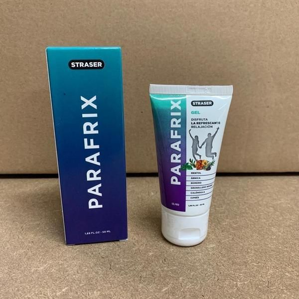
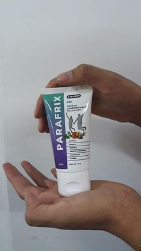

"Cuando las articulaciones no te permiten vivir una vida plena, sólo puedes esperar un milagro" ¡Entrevista exclusiva con el legendario hombre que creó un milagro!
Hoy tenemos un invitado especial, el legendario inventor y científico Pedro Soto.
¡Hola, Pedro! ¿Quieres hablarnos de ti?
Nací y me crié en Valencia. Soy un doctor de la más alta categoría, graduado en 1975. En la universidad conocí a mi futura esposa Hilda. Hasta 2009, trabajé como podólogo.
Eso es interesante. ¿Pero qué pasó en 2009 y por qué dejó su trabajo?
En 2007, a Hilda se le diagnosticó osteoartritis en la articulación de la rodilla. Tengo que admitir que este fue un punto de inflexión en nuestras vidas, aunque en ese momento parecía una prueba insuperable. En 2 años probamos de todo: fisioterapia, rechazo de la actividad física, complejos vitamínicos (condroitina, glucosamina, entre otros), geles, ungüentos. Todo fue en vano. Nada funcionó, estábamos desesperados. No podía creer que no había nada que pudiera hacer con mi experiencia médica para ayudar a mi esposa. Estaba muy decepcionado con nuestro sistema de salud: ¿realmente no hay manera de darle a las personas una vida larga y feliz? Así que empecé mi investigación.
¿Qué tipo de investigación? ¿Podemos saber sobre esto?
Cuando te das cuenta de que tu esposa podría dejar de caminar en unos años, harías cualquier cosa para evitarlo. Comencé una búsqueda. Investigué todo lo relacionado con las enfermedades de las articulaciones, de manera directa o indirectamente. He estudiado fisiología, psicosomática, bioquímica y más. Gasté casi todo mi dinero aprendiendo de los mejores especialistas de Asia que probablemente sabían más acerca de las enfermedades de las articulaciones en comparación los médicos de Europa.
En diciembre de 2009, logré reunir todo el conocimiento que había acumulado en ese momento. Y me di cuenta de que mezclando ciertos componentes, podría obtener un remedio efectivo para aliviar el dolor de las articulaciones para siempre. Pero me esperaba una sorpresa: los componentes necesarios no estaban disponibles en nuestro país. Tomé un préstamo y los pedí directamente desde Asia. Un mes después llegaron los ingredientes, pero tuve otra sorpresa: nadie quería producir el producto que yo necesitaba. Fue bueno que tuviera amigos de la universidad que me ayudaron. Después de 3 semanas, obtuve la fórmula, que inmediatamente probamos con Hilda.
¡Dios Todopoderoso! ¡Me brindó ayuda!
¿Qué fue lo que pasó?
Hilda estaba mejorando cada día. Después de 7 días de tratamiento, ya podía ir a las tiendas e iba a comprar la comida, la sonrisa que tanto extrañaba comenzó a aparecer en su rostro. Después de 2 semanas, la osteoartritis había desaparecido por completo. No podía creer lo que veía, pero los análisis mostraron que Hilda estaba más saludable que nadie. Me quedé asombrado. ¡Fue una verdadera victoria!
¡Usted es un gran ejemplo para mucha gente de nuestro país! ¿Pero qué pasó después?
Antes solíamos disfrutar de la vida, cada momento de ella, durante este tiempo Hilda dio a luz a nuestra hermosa hija, agradeciéndome por mi fórmula, ya que el embarazo implica una gran carga para las articulaciones.
Una noche, Hilda me preguntó si había mucha gente en Peru con enfermedades articulares. Miramos las estadísticas y encontramos que, desafortunadamente, este es un problema bastante común. Más de un millón de personas en Peru tienen varias enfermedades articulares, y experimentan un dolor constante. Así que me hizo una pregunta que cambió mi vida para siempre: ¿No podríamos ayudar a otras personas ¿Hacerlas felices? Me enamoré de ella como la primera vez. Esta mujer es lo mejor que me ha pasado en la vida. Estaba completamente de acuerdo con ella. Me llevó unos tres años mejorar la fórmula y crear un producto que se llama "Parafrix” es lo mejor que la gente de nuestro país puede permitirse.

Suena esperanzador. Cuéntenos más sobre "Parafrix".
Hilda y yo hicimos algo que nadie más había hecho, Parafrix es una pomada revolucionaria a base de:
- Raíz de Ophelia wilfordii
- Trigo con la raíz rastrera
- Resina de cedro siberiano
- Aceites de abedul y menta
- muchos otros componentes auxiliares
La mayoría de estos componentes, lamentablemente, no se venden en nuestro país, por lo que los traemos de Asia.
Gracias a su fórmula única, Parafrix es capaz de curar cualquier enfermedad de las articulaciones:
- Artritis
- Artrosis
- Coxartrosis
- Artrosis
- Osteocondrosis
- Osteocondrosis
- Osteoporosis
- Lesión del menisco
- Gonartrosis
¡Esto es increíble! Usted es un verdadero inventor de nuestro tiempo. ¿Cómo lo hizo?
No olvidemos que nos tomó muchos años de trabajo minucioso. El año que viene celebraremos nuestro décimo aniversario. Hasta la fecha 17 934 personas ya han empezado a vivir una vida plena, olvidándose para siempre de los dolores articulares.
Sabes, Hilda y yo no queremos ganar dinero con esto. ¡Sólo queremos ayudar a las personas! Por cierto, todos los meses hacemos un concurso con valiosos premios para la gente que usa nuestros productos:
¿En dónde se puede comprar Parafrix?
Desafortunadamente, no se puede comprar en farmacias. Ellos solo venden productos de las principales compañías farmacéuticas, que en el mejor de los casos simplemente no ayudan, sin mencionar los algunos de ellos causan graves efectos secundarios.
Tenemos un sitio oficial en donde se puede ordenar Parafrix.
¿Qué le gustaría desear a nuestros clientes?
Hilda y yo decidimos reducir el precio de Parafrix al 50%. Ahora todos pueden aprovechar esta oferta especial. Hasta ¡Incluido! Después de este período, ya no podrás obtener Parafrix a un precio tan bajo.
¡Le deseo una buena salud! Este es el regalo más importante. Ningún dinero traerá felicidad si no tienes salud.
- ¡Que tengáis un buen día, amigos!
¡Deshazte de los dolores en las articulaciones!
OBTENER PARAFRIX
¿Te gustó el artículo? ¡Compártelo con tus amigos!
33 comentarios


Luisa Fernández
Estoy tan agredecida con usted Pedro. Desde hace tiempo buscaba algo similar. Lo ordené con un descuento del 50% y espero el paquete con ansias. ¡Gracias!
Hace una hora
Violeta Olivar
Tenía artrosis. Pero ahora ya no… ¡Desapareció después del tratamiento completo! ¡Gracias por esto!
Hace una hora
Clara Narvarte
¡A mi me pasó lo mismo! ¡Es un medicamento efectivo contra las enfermedades de las articulaciones! Ya no me duelen los codos y las rodillas.
Hace una hora
Andrés Valdez
¡Pedro, gracias por este producto! No solo salvó a mi esposa sino también a otras personas. Hace poco intenté aplicar Parafrix en la zona de la columna cervical, tenía osteocondrosis pero ahora me siento mejor. ¡Espero sentirme mucho mejor en un futuro!

Hace una hora
Pedro Soto
Andrés no te preocupes y continúa usando Parafrix. Lo importante es seguir las instrucciones del ungüento.
Con cariño, Pedro.
Hace una hora
Alex Moreno
¡Chicos, ayuda! Estoy cansado del dolor de espalda. La incomodidad y el dolor me impiden vivir tranquilo. Ya no sé qué hacer. Tomo unas cuantas pastillas, de vez en cuando me pongo todo tipo de ungüentos pero nada me ayuda: (
Hace una hora
Sergio Buendía
Alex, ordena Parafrix, no te arrepentirás. Yo también tenía el mismo problema, debido a mis articulaciones ya no podía ni siquiera caminar. Gracias a mi madre, encontré esta pomada y me dijo que la usara. Por cierto, la compramos hace seis meses, sin descuento (aunque el precio no era tan alto). Ahora ya no tengo problemas con mis articulaciones y me muevo con facilidad. Úsalo, y todo irá bien, ya verás, sobre todo porque ahora está con un descuento del 50% no te arriesgas a nada.
Hace una hora
Antonina Rojas
¿Cómo ordenar Parafrix?
Hace una hora
Victor I
Antonina, aquí está el enlace al sitio web oficial solamente le recomiendo darse prisa si quiere usar la oferta especial para comprarlo con un descuento del 50%.El ungüento me ayudó mucho
Hace una hora
Antonina Rojas
Victor, gracias ya la he ordenado. ¿Me podría decir cuanto tiempo dura el envío?
Hace una hora
Victor I
Antonina, aproximadamente 3 días
Hace una hora
María Castillo
La ordené para mi hermana hace dos meses. Durante mucho tiempo sufrió de artritis.¡Ella quedó completamente agradecida conmigo después de ordenar Parafrix!
Hace una hora
Miguel Manriquez
¿María, en realidad es efectivo? Tal vez deba ordenar ya que hay descuento del 50%.
Hace una hora
Virgilio Allende
Yo también he escuchado sobre este producto. Alguno de mis amigos ordenó algo similar. Tenía problemas después de una lesión, el segundo año tenía fuertes dolores, los doctores no me ayudaban... ahora he leído este artículo y he decidido ordenar Parafrix. Ahora haré mi pedido para probarlo.
Hace una hora
Olga J
Veo que gracias a Dios no soy la única con tales problemas, la he probado desde hace un mes y Parafrix me ha ayudado a deshacerme de la osteocondrosis tan rápido en comparación con otros productos que nunca pudieron hacer eso.
Hace una hora
Alejandro P
Chicos, ¿realmente ayuda? Quiero decir, los medicamentos y doctores ya son inútiles para mí.
Hace una hora
Marina
Por supuesto, Alejandro. El efecto es muy fuerte, pero lo más importante es que no daña la salud. Así que date prisa para ordenar. Parafrix me ayudó a deshacerme por completo de mis problemas con la espalda.
Hace una hora
Verónica Álvarez
¡Gracias, Parafrix me ayudó mucho! ¡Lo pedí directamente de la página web oficial! No esperes demasiado, es mejor deshacerse del problema ahora que luego darte cuenta de que ya no puedes moverte.

Hace una hora
Diana Díaz
¡Gracias, Pedro! ¡Si no hubiera sido por usted nunca hubiera creído en la efectividad de Parafrix! Mi esposo hace 5 años tenía el mismo problema al igual que su esposa. Él sufrió demasiado. Y ahora corre como si tuviera nuevamente 18 años.
El envío llegó muy rápido
Hace una hora
Pedro Soto
Diana no me agradezcas a mi. ¿Mejor dime cuánto tiempo tomó la recuperación?
Con cariño, Pedro.
Hace una hora
Diana Díaz
Pedro, aproximadamente un mes estuvo usando la pomada, ahora se mueve libremente y no se queja para nada. Estoy muy feliz de que ahora todo esté bien con él.
Hace una hora
Pedro Soto
Diana, muchas gracias.
Con cariño, Pedro.
Hace una hora
Elena López
El resultado superó mis expectativas. ¡La radiculitis desapareció para siempre! Lo ordené para mi amigo, él sufre de dolor en la espalda y en la articulación del codo.
Hace 57 minutos
Marina H
Hace poco realicé mi pedido
Quedé sorprendida de que realmente se vende con un descuento del 50%.
Dejé mi número de teléfono en la página web oficial, casi de inmediato recibí una llamada para confirmar mi orden. Quiero vivir en este mundo sin dolor, disfrutar de los paseos y demás:)
Hace 55 minutos
Alisa Savedra
Lo ordené para mi ya que sufría de artritis desde hace tiempo. Al llover o durante los cambios de clima me sentía literalmente sin piernas. Parafrix me ayudó al par de semanas. Incluso no podía imaginar que esto era posible.
Hace 53 minutos
Ana Resendiz
Un conocido tiene una farmacia, esta pomada la vende por casi 150 euros, así que no pude comprarla. Después la vi con un descuento del 50% y la ordené inmediatamente, ya que mi pensión no es tan alta y no puedo gastar mucho en medicamentos. Ahora ya no me duele la rodilla, trabajo tranquilamente en el huerto sin dolor. ¡Gracias!
Hace 48 minutos
Pedro Soto
Ana, las farmacias también quieren vender este producto. No es digno hacer dinero con la desgracia de las personas. Ahora vigilaremos nuestros productos: a dónde y a quién los enviamos.
Con cariño, Pedro.
Hace 36 minutos
Isabel
Parafrix me ayudó a deshacerme de la gota en una sola aplicación, ahora la guardo siempre en mi botiquín de primeros auxilios, para cualquier emergencia.
Hace 36 minutos
Martín
Lo ordené para mí. Hizo un gran trabajo. Si tienes un problema con tus articulaciones, te lo recomiendo encarecidamente, créeme. La entrega fue rápida, sólo tres días.
Hace 39 minutos
Pedro Soto
¡Gracias, Martín! Tratamos de entregar Parafrix lo más pronto posible para que finalmente se olviden de los diferentes problemas.
Con cariño, Pedro.
Hace 36 minutos
Lucia
Leí el artículo y decidí pedir la pomada inmediatamente para probarla mientras está esta promoción. Me inspiró la historia sobre Pedro y su esposa. El hecho es que los medicamentos "normales" me ayudaron sólo por un tiempo y como me dijeron es difícil deshacerse de la artritis. Ahora les hablaré de mis logros. Llegó rápidamente. El primer día me sentí tan aliviada que no pude evitar escribir sobre ello aquí. ¡Muchas gracias, ahora puedo vivir plenamente!
Hace 31 minutos
Isac
¿Chicos, en donde lo ordenasteis? En las farmacias no se vende, pero tengo miedo de comprarlo por Internet. No me gustaría recibir una falsificación que no me ayude en nada.
Hace 27 minutos
Pedro Soto
Repito nuevamente Parafrix solo se puede ordenar en el sitio oficial. Para no equivocarte solo tienes que hacer clic en el enlace de arriba. Recuerda que puedes conseguir Parafrix con un 50% del descuento, pero la promoción será válida sólo por un corto tiempo, así que date prisa a realizar tu pedido
y evita las falsificaciones, gracias.
Con cariño, Pedro.
Hace 15 minutos